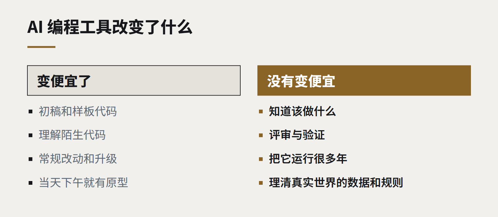

洞察
技术趋势
当写软件变得便宜，什么会改变
AI 编程工具让产出代码快了很多，却没有让“决定做什么”、“确认它能用”以及“运行它很多年”变得更便宜——而这改变了价值所在的位置。
过去一年里，AI 编程助手已经从自动补全，变成了更像一位初级同事的存在：它们起草整个函数、编写测试、解释陌生代码、在整个代码库里执行常规改动。在我们自己的项目上，一个需求描述清晰的功能，做出第一个可运行版本所需的时间已经大幅缩短。
很容易就此得出结论：软件变便宜了。其中一部分确实如此。但这种影响并不均匀，弄清它落在哪里，会改变企业采购、构建和配置技术团队的方式。
什么变便宜了
- 初稿。 脚手架、样板代码、对接文档完善的 API、数据转换，以及每个系统都需要的上百个小工具。
- 理解现有代码。 让助手解释一个陌生模块、追踪一个值如何在系统中流动，把几个小时的阅读变成几分钟。
- 常规改动。 升级依赖、跨代码库重命名、补上那些一直没时间写的测试。
- 原型。 一个想法被讨论的当天下午，就能有一个可点击的版本。

什么没有变便宜
- 知道该做什么。 理解业务问题、约束和用户，和以前一样难。当构建变得很快，做错东西也只是变得更快而已。
- 验证。 生成的代码仍然需要一个为它负责的人来评审、测试和理解。在许多团队里，评审已经成了瓶颈，而且这是需要专业能力的工作。
- 运行。 每一行上线的代码，都要被托管、监控、加固和维护很多年。创造变便宜了，拥有并没有变便宜；甚至，它让团队更容易积累超出自己照看能力的代码。
- 与现实的衔接。 杂乱的数据、遗留系统、企业内部那些没有文档的规则，仍然需要耐心的人工去一点点挖掘。
这对企业意味着什么
自建还是购买的天平移动了。 过去撑不起定制开发的小型内部工具，现在常常撑得起了——一个量身定做的工作流，而不是一个需要十几种变通办法的通用 SaaS 订阅。但每一个都是需要有人负责的系统。在能创造真正优势的地方自建，在问题通用的地方购买。
需求说明更值钱了。 对需要什么描述得越清楚，AI 工具就越能有效地帮忙把它做出来。花在需求简报、验收标准和测试用例上的时间，回报从未如此之快。
质量关卡更重要，而不是更不重要。 自动化测试、类型检查、代码评审和评测集，是让高频变更变得安全的东西。跳过它们的团队，会快上一个季度，之后就会变慢。
小团队能做更多。 几个经验丰富、工具趁手的人，现在能交付过去需要更大团队才能完成的工作——前提是，他们把省下的时间花在判断上，而不是为了产出更多代码而产出代码。
仍然属于人的那部分
软件工作的价值正在沿着链条上移：从敲代码，走向决定什么应该存在、确认它是对的，以及在它上线之后为它负责。这是我们自己投入精力的地方，也是我们会建议客户投入精力的地方。
继续阅读
全部洞察